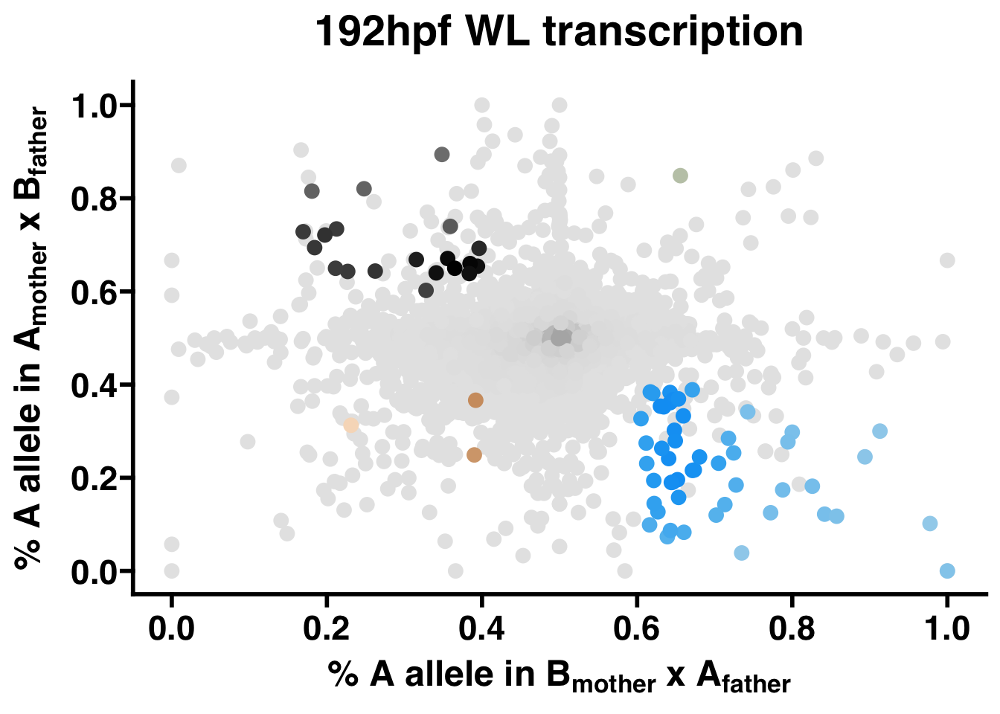

3 SNP-level parent-specific read counts to allele-specific transcription
3.1 Overview
This R tutorial follows quantification of SNP-level parent-specific mRNA-seq read counts and documents a statistical method for comparing allele-specific transcription between phenotypes in offspring derived from reciprocal crosses.
Sequencing data for this tutorial are described in Bresnahan et al., 2024, “Intragenomic conflict underlies extreme phenotypic plasticity in queen-worker caste determination in honey bees (Apis mellifera)”, bioRxiv. See the tutorial README for more details.
The honey bee gene annotations and the F1 SNPs intersecting honey bee genes generated in Section 2 are imported. SNPs are assigned to the longest transcript for each gene. SNPs intersecting \(n > 2\) genes or \(n = 2\) genes on the same strand are discarded, as it is impossible to assign SNP-level counts to genes with transcripts that overlap on the same strand. Additionally, SNPs within miRNA, tRNA, and repetitive pseudogenes are discarded as these are inappropriate for allele-specific analysis using short sequencing reads (for details, see: Wang & Clark, 2014, Heredity.)
The F2 read counts at F1 SNPs generated in Section 2 are imported. SNPs with \(n < 1\) count in any Lineage are discarded. In cases where the distance between SNPs is shorter than the average read length (and thus the read counts are exactly the same for both SNPs), one SNP is chosen at random. Finally, genes with \(n < 2\) SNPs are discarded, as this method requires at least two independent observations per gene for statistical analysis.
To adjust for differences in sequencing depth between libraries, library size factors are estimated and the read counts are normalized using the median of ratios normalization (MRN) method from DESeq2.
For each SNP, a Storer-Kim binomial exact test of two proportions is conducted using the MRN counts to test the hypothesis that the proportion of maternal and paternal read counts are statistically different.
A general linear mixed-effects model with interaction terms (GLIMMIX) is fit for each gene to assess the effects of Parent, Lineage, and their interaction on the raw read counts at each SNP, using the log of the library size factors as an offset to adjust for variation in sequencing depth between libraries. A Wald test is performed to assess the statistical significance of the effects.
For a gene to be considered as showing parent-of-origin or lineage-of-origin effects, all SNPs are required to exhibit the same directional bias in the Storer-Kim test, and a strictly parent-of-origin or lineage-of-origin effect in the GLIMMIX. To avoid identifying genes with parent-of-origin effects influenced by lineage-of-origin effects, or lineage-of-origin genes influenced by parent-of-origin effects, genes with a significant interaction effect are considered unbiased. Additionally, the proportions of Lineage A reads in samples with a Lineage B mother and Lineage A father (proportion 1, or p1), and the proportion of Lineage A reads in samples with a Lineage A mother and Lineage B father (p2), are subjected to a threshold test following methods described in Wang & Clark, 2014, Heredity.
3.2 Setup
3.2.1 Tutorial files
Download all files used in this tutorial here or via the command line:
3.2.2 Packages
Several CRAN packages are required for this tutorial. Use pacman to install those that are not already on your machine.
if (!require("pacman")) install.packages("pacman")
pacman::p_load("tidyverse", "plyr", "Rfast", "tryCatchLog",
"lmerTest", "lme4", "car", "gridExtra",
"doParallel", "ggpubr", "grid", "tagcloud",
"ggprism")This tutorial also uses a few Bioconductor packages. Use BiocManager to install them.
if (!require("BiocManager", quietly = TRUE))
install.packages("BiocManager")
BiocManager::install(c("DESeq2","genomation","GenomicFeatures"))Load all packages.
3.2.3 Custom functions
For efficiency, most of the code detailed throughout this tutorial has been compiled as custom functions, which are included in the project repository as AST-tutorial/AST_functions.R. These can be loaded into R during setup:
In this tutorial, each function will first be written explicitly to document how it works before demonstrating its use.
3.2.4 Sample metadata
Many of the custom functions described above reference the sample metadata, which must follow this specific format:
| sample.id | parent | block | phenotype | individual | lineage |
|---|---|---|---|---|---|
| PARENT_FILE | M or F | integer | character | FILE | A or B |
Note: for sample.id, PARENT_FILE corresponds to the file name suffix assigned to the SNP-level read count files generated in Section 2, with PARENT being the respective F1 genome to which the F2 mRNA-seq read FILE was aligned.
Sample metadata for the sequencing data described in Bresnahan et al., 2024, bioRxiv used in this tutorial has been included in the project repository as AST-tutorial/metadata.csv:
3.3 Generate sample x SNP:gene count matrix
3.3.1 Filter SNPs by transcript
The honey bee gene annotations saved as $AST-tutorial/{DIR_INDEX}/Amel_HAv3.1_genes.gff3 and the F1 SNPs intersecting honey bee genes saved as $AST-tutorial/{DIR_ANALYSIS}/SNPs_for_Analysis_Sorted.bed generated in Section 2 are imported. SNPs are assigned to the longest transcript for each gene, and SNPs within miRNA, tRNA, and repetitive pseudogenes and are discarded. A list of these genes has been included in the project repository as AST-tutorial/genelist_filter.csv.
# Load in filter list
filterlist <- read.csv("AST-tutorial/genelist_filter.csv",header=F)[,c(1)]
# Make txdb from the honey bee gene annotations
txdb <- makeTxDbFromGFF("AST-tutorial/INDEX/Amel_HAv3.1.gff")
transcripts <- transcripts(txdb)Function: filter_SNPs
filter_SNPs <- function(SNP_gene_bed,exons,filterlist){
## SNP_gene_bed = bed file of SNPs intersecting genes
## exons = GRanges object containing exon regions
## filterlist = list of gene IDs to filter
# Load in the SNPs BED file
SNPs <- readBed(SNP_gene_bed)
# Get SNPs that overlap with transcripts
SNPs.exons <- findOverlaps(SNPs,exons)
SNPs <- SNPs[queryHits(SNPs.exons)]
SNPs <- data.frame(SNPs)[,c(1,2,7)]
names(SNPs) <- c("chr","pos","SNP_gene")
# Create SNP and geneID columns by splitting SNP_gene on ":"
SNPs$SNP <- as.character(map(strsplit(SNPs$SNP_gene,split = ":"), 1))
SNPs$geneID <- as.character(map(strsplit(SNPs$SNP_gene,split = ":"), 2))
# Filter SNPs in genes within filterlist
SNPs <- SNPs[!SNPs$geneID%in%filterlist,]
# Delete any duplicate rows and clean up
SNPs <- SNPs[!duplicated(SNPs),]
rm(SNPs.exons)
# Output
return(SNPs)
}# Execute
SNPs <- filter_SNPs("AST-tutorial/ANALYSIS_SETS/SNPs_for_Analysis_Sorted.bed",
transcripts,filterlist)
# Save output
write.csv(SNPs,"AST-tutorial/ANALYSIS/INTERMEDIATES/SNPs.csv",row.names=F)Example rows:
| chr | pos | SNP_gene | SNP | geneID |
|---|---|---|---|---|
| NC_037638.1 | 54752 | snp_99616:LOC107964061 | snp_99616 | LOC107964061 |
| NC_037638.1 | 91397 | snp_99617:LOC113219112 | snp_99617 | LOC113219112 |
| NC_037638.1 | 147183 | snp_99618:LOC726544 | snp_99618 | LOC726544 |
| NC_037638.1 | 148247 | snp_99619:LOC726544 | snp_99619 | LOC726544 |
| NC_037638.1 | 148360 | snp_99620:LOC726544 | snp_99620 | LOC726544 |
| NC_037638.1 | 148370 | snp_99621:LOC726544 | snp_99621 | LOC726544 |
3.3.2 Merge count files to matrix
The F2 read counts at F1 SNPs generated in Section 2 are imported. In cases where the distance between SNPs is shorter than the average read length (and thus the read counts are exactly the same for both SNPs), one SNP is chosen at random.
Function: make_ASE_counts_matrix
make_ASE_counts_matrix <- function(DIR_COUNTS,cores,SNPs){
## DIR_COUNTS = name of subdirectory containing count files
## cores = number of threads for parallel processing
## SNPs = dataframe generated by filter_SNPs2
# Read in data
## List files ending in .txt in DIR_COUNTS
SNP_counts <- data.frame(matrix(ncol=0,nrow=length(SNPs$SNP_gene)))
SNP_counts$SNP_gene <- SNPs$SNP_gene
files.counts <- list.files(path=DIR_COUNTS, pattern="*.txt",
full.names=TRUE, recursive=FALSE)
## Left join count files by SNP_ID:geneID
for(i in 1:length(files.counts)){
print(i)
tmp.name <- strsplit(strsplit(files.counts[[i]],
split = "/")[[1]][length(strsplit(files.counts[[i]],
split = "/")[[1]])],
split = "[.]")[[1]][1]
if(tmp.name%in%metadata$sample.id){
tmp <- read.table(files.counts[[i]],header=F)[,c(4,7)]
names(tmp) <- c("SNP_gene",tmp.name)
SNP_counts <- SNP_counts %>%
left_join(tmp, by = c('SNP_gene' = 'SNP_gene'))
}
}
rm(tmp,files.counts,tmp.name)
# Clean up dataframe
row.names(SNP_counts) <- SNP_counts$SNP_gene
SNP_counts$SNP_gene <- NULL
SNP_counts[is.na(SNP_counts)] <- 0
SNP_counts$gene <- as.character(map(strsplit(row.names(SNP_counts), split = ":"), 2))
# Remove duplicate rows within genes
genelist <- unique(SNP_counts$gene)
delete.rows <- list()
## Use DoParallel to perform loop operation in parallel
registerDoParallel(cores=cores)
delete.rows <- foreach(i=1:length(genelist)) %dopar% {
tmp <- SNP_counts[SNP_counts$gene==genelist[i],]
d <- row.names(tmp[duplicated(tmp),])
delete.rows <- return(d)
}
SNP_counts <- SNP_counts[!row.names(SNP_counts)%in%unlist(delete.rows),]
# Output
return(SNP_counts)
}# Execute
SNP_counts <- make_ASE_counts_matrix("AST-tutorial/COUNT",4,SNPs)
# Save output
write.csv(SNP_counts,"AST-tutorial/ANALYSIS/INTERMEDIATES/SNP_gene_counts.csv")Example rows:
| B3D_CMG0017_S9 | B3D_CMG0018_S10 | |
|---|---|---|
| snp_99616:LOC107964061 | 8 | 7 |
| snp_99617:LOC113219112 | 9 | 6 |
| snp_99618:LOC726544 | 7 | 11 |
| snp_99619:LOC726544 | 3 | 7 |
| snp_1:LOC726544 | 3 | 7 |
| snp_99623:LOC726544 | 3 | 8 |
3.4 Prepare sample x SNP:gene counts for analysis
3.4.1 Normalize by library size
In spite of every effort to standardize the library preparation and sequencing procedures, there are innumerable sources of between-sample variation that cannot be controlled for which will result in variation in sequencing depth between libraries. This is apparent here:

To adjust for differences in sequencing depth between libraries, library size factors are estimated and the read counts are normalized using the median of ratios normalization (MRN) method from DESeq2.
First, sum the parent-specific counts by library and estimate library size factors:
Function: calcSizeFactors
calcSizeFactors <- function(counts,mdata){
## counts = counts matrix generated by make_ASE_counts_matrix
## mdata = dataframe containing sample metadata
# Merge parent-specific counts by library
counts <- counts[,names(counts)%in%mdata$sample.id]
counts_merged <- data.frame(matrix(ncol=0,nrow=length(row.names(counts))))
samples <- unique(mdata$individual)
for(i in 1:length(samples)){
tmp <- counts[,names(counts)%in%mdata[mdata$individual==samples[i],"sample.id"]]
tmp.merged <- rowSums(tmp)
counts_merged <- cbind(counts_merged,tmp.merged)
}
names(counts_merged) <- samples
mdata.merged <- mdata[,c("individual",
"phenotype",
"lineage")]
mdata.merged <- mdata.merged[!duplicated(mdata.merged),]
# Estimate library size factors using the median of ratios normalization method from DESeq2
dds <- DESeqDataSetFromMatrix(countData = counts_merged, colData = mdata.merged,
design = ~ lineage + phenotype)
dds <- estimateSizeFactors(dds)
sizeFactors <- sizeFactors(dds)
sF2meta <- data.frame(individual=names(sizeFactors))
sF2meta$sF <- as.numeric(sizeFactors)
sF2meta <- left_join(sF2meta,mdata[,c("individual",
"sample.id")],
multiple = "all")
sF2meta <- sF2meta[,c(3,2)]
sF2meta <- sF2meta[match(names(counts), sF2meta$sample.id),]
sFs <- sF2meta$sF
names(sFs) <- sF2meta$sample.id
# Output
return(sFs)
}Second, perform the MRN method on the parent-specific counts using the library size factors calculated above.
Function: normalizeASReadCounts
normalizeASReadCounts <- function(counts,size_factors){
## counts = counts matrix generated by make_ASE_counts_matrix
## size_factors = array from calcSizeFactors
# Normalize counts for each library by parent
mdata <- metadata[metadata$sample.id%in%names(counts),]
counts <- counts[,names(counts)%in%mdata$sample.id]
as.dds <- DESeqDataSetFromMatrix(countData = counts, colData = mdata,
design = ~ lineage+phenotype)
sizeFactors(as.dds) = size_factors
counts_normalized <- data.frame(counts(as.dds, normalized=TRUE))
# Output
return(counts_normalized)
}3.4.2 Split by phenotype and filter low count SNPs
Further filtering steps are performed after splitting the count matrix by phenotype. This is important as the set of transcribed genes is expected to vary between phenotypes. For the remainder of the tutorial, these phenotypes will be referred to in the code as “WL” and “QL” to match the sample metadata.
WL.IDs <- metadata[metadata$phenotype=="WL","sample.id"]
WL_counts_normalized <- SNP_counts_normalized[,names(SNP_counts_normalized)%in%WL.IDs]
WL_counts <- SNP_counts[row.names(SNP_counts)%in%row.names(WL_counts_normalized),
names(SNP_counts)%in%WL.IDs]
QL.IDs <- metadata[metadata$phenotype=="QL","sample.id"]
QL_counts_normalized <- SNP_counts_normalized[,names(SNP_counts_normalized)%in%QL.IDs]
QL_counts <- SNP_counts[row.names(SNP_counts)%in%row.names(QL_counts_normalized),
names(SNP_counts)%in%QL.IDs]SNPs with \(n < 1\) count in any Lineage are discarded. Finally, genes with \(n < 2\) SNPs are discarded, as this method requires at least two independent observations per gene for statistical analysis.
Note: here is where the utility of functions really becomes apparent. For the remainder of the tutorial, the same functions will be applied to the “WL” and “QL” count matrices.
Function: filter_counts
filter_counts <- function(counts,lcf){
# counts = phenotype-specific counts matrix
# lcf = low count filter threshold (integer)
# Remove rows with < lcf counts counts by Lineage
LA <- metadata[metadata$lineage=="A","sample.id"]
LB <- metadata[metadata$lineage=="B","sample.id"]
counts <- counts[rowSums(counts[,names(counts)%in%LA])>lcf,]
counts <- counts[rowSums(counts[,names(counts)%in%LB])>lcf,]
# Flag rows with greater than 10000 counts
## Different functions are used for SK tests with < and > 10000 counts for computational efficiency
counts$SUM <- rowSums(counts)
counts$SKrow <- F
counts[counts$SUM<10000,"SKrow"] <- T
counts$SUM <- NULL
# Remove genes with < 2 SNPs
counts$gene <- as.character(map(strsplit(row.names(counts), split = ":"), 2))
genelist <- unique(counts$gene)
delete.rows <- list()
for(i in 1:length(genelist)){
tmp <- counts[counts$gene==genelist[i],]
tmp <- tmp[!duplicated(tmp),]
if(length(row.names(tmp))<2){
delete.rows <- append(delete.rows,genelist[i])
}
}
counts <- counts[!counts$gene%in%unlist(delete.rows),]
counts$gene <- NULL
# Return filtered counts
return(counts)
}# Execute
WL_counts_normalized <- filter_counts(WL_counts_normalized,0)
WL_counts <- WL_counts[row.names(WL_counts)%in%row.names(WL_counts_normalized),]
QL_counts_normalized <- filter_counts(QL_counts_normalized,0)
QL_counts <- QL_counts[row.names(QL_counts)%in%row.names(QL_counts_normalized),]
# Save output
write.csv(WL_counts_normalized,"AST-tutorial/ANALYSIS/INTERMEDIATES/G53xY39_WL_counts_normalized.csv")
write.csv(WL_counts,"AST-tutorial/ANALYSIS/INTERMEDIATES/G53xY39_WL_counts.csv")
write.csv(QL_counts_normalized,"AST-tutorial/ANALYSIS/INTERMEDIATES/G53xY39_QL_counts_normalized.csv")
write.csv(QL_counts,"AST-tutorial/ANALYSIS/INTERMEDIATES/G53xY39_QL_counts.csv")3.5 Conduct statistical tests
The data are now ready for statistical analysis of allele-specific transcription. Storer-Kim, GLIMMIX, and threshold tests will be performed for each phenotype, separately, and then a Chi-squared test will be performed to compare the distribution of genes showing parent- and lineage-biased transcription between phenotypes.
3.5.1 SNP-level Storer-Kim (SK) binomial exact tests
For each SNP, a Storer-Kim binomial exact test of two proportions is conducted using the MRN counts to test the hypothesis that the proportion of maternal and paternal read counts are statistically different.
Function: twobinom
This test is performed using a modified version of the twobinom function from WRS2. For computational efficiency, the outer() command has been replaced with Rfast::Outer().
twobinom<-function(r1,n1,r2,n2,alpha=.05){
# r1 = success in group 1
# n1 = total in group 1
# r2 = success in group 2
# r2 = total in group 2
n1p<-n1+1
n2p<-n2+1
n1m<-n1-1
n2m<-n2-1
q <- r1/n1
p <- r2/n2
if(is.na(q)){q <- 0}
if(is.na(p)){p <- 0}
chk<-abs(q-p)
x<-c(0:n1)/n1
y<-c(0:n2)/n2
phat<-(r1+r2)/(n1+n2)
m1<-t(Outer(x,y,"-"))
m2<-matrix(1,n1p,n2p)
flag<-(abs(m1)>=chk)
m3<-m2*flag
rm(m1,m2,flag)
xv<-c(1:n1)
yv<-c(1:n2)
xv1<-n1-xv+1
yv1<-n2-yv+1
dis1<-c(1,pbeta(phat,xv,xv1))
dis2<-c(1,pbeta(phat,yv,yv1))
pd1<-NA
pd2<-NA
for(i in 1:n1){pd1[i]<-dis1[i]-dis1[i+1]}
for(i in 1:n2){pd2[i]<-dis2[i]-dis2[i+1]}
pd1[n1p]<-phat^n1
pd2[n2p]<-phat^n2
m4<-t(Outer(pd1,pd2,"*"))
test<-sum(m3*m4)
rm(m3,m4)
list(p.value=test,p1=q,p2=p,est.dif=q-p)
}Function: AST.SK
This is a wrapper function to perform the Storer-Kim test comparing the proportion of maternal to paternal read counts on each SNP in the count matrix. The Storer-Kim test has greater statistical power for low count observations, but is computationally expensive to perform and crashes when the total counts for a SNP are n > 10,000. Therefore, filter_counts flagged these rows, and AST.SK will instead perform a Fisher’s Exact test of two proportions, which is equivalent to a Storer-Kim test for high count observations. The test p-value is reported for each SNP.
Note: because this test is computationally expensive, executing AST.SK will take approximately 2hrs per 10,000 SNPs.
AST.SK <- function(counts,phenotype,cores){
# counts = phenotype-specific counts matrix
# phenotype = corresponding phenotype of counts
# cores = # of threads for multithreaded search
# Split data by pat and mat
pat.exp <- counts[,metadata[metadata$parent%in%c("M")&
metadata$phenotype==phenotype,"sample.id"]]
mat.exp <- counts[,metadata[metadata$parent%in%c("F")&
metadata$phenotype==phenotype,"sample.id"]]
# Set up for DoParallel
SKrows=counts$SKrow
registerDoParallel(cores=cores)
i.len=length(row.names(pat.exp))
# For each row, conduct an SK test and return the p-value
return.df <- foreach(i=1:i.len, .combine=rbind,
.export=ls(globalenv()),.packages="Rfast") %dopar% {
SNP_gene=row.names(pat.exp[i,])
p1.s=sum(pat.exp[i,])
p2.s=sum(mat.exp[i,])
p.o=sum(p1.s,p2.s)
if(SKrows[i]==T){
test=twobinom(r1=p1.s,n1=p.o,
r2=p2.s,n2=p.o)$p.value
}else{
test=fisher.test(matrix(c(p1.s,p2.s,
p2.s,p1.s),ncol = 2))$p.value
}
return.append=data.frame(SNP_gene=SNP_gene,p=test)
return(return.append)
}
return.df=return.df[match(row.names(pat.exp), return.df$SNP_gene),]
# Return
return(return.df)
}3.5.2 Gene-level general linear mixed models (GLIMMIX)
A general linear mixed-effects model with interaction terms (GLIMMIX) is fit for each gene to assess the effects of Parent, Lineage, and their interaction on the raw read counts at each SNP, using the log of the library size factors as an offset to adjust for variation in sequencing depth between libraries.
Function: AST.GLIMMIX
This is a wrapper function to fit a GLIMMIX for each gene in the count matrix and perform Wald tests to assess the statistical significance of the effects (parent, lineage, and their interaction). Wald test p-values are reported for each effect for each gene. Genes for which a model could not be fit due to errors are returned with a p-value of “1” for each effect.
AST.GLIMMIX <- function(counts,size_factors,cores){
# counts = phenotype-specific counts matrix
# phenotype = corresponding phenotype of counts
# cores = # of threads for multithreaded search
# size_factors = object from calcSizeFactors
sizeFactors <- data.frame(t(size_factors[names(size_factors)%in%names(counts)]))
sizeFactors <- gather(sizeFactors, sample.id, sizeFactor,
names(sizeFactors),factor_key=FALSE)
counts$SNP_gene <- row.names(counts)
counts$geneID <- as.character(unlist(map(strsplit(counts$SNP_gene,
split = ":"), 2)))
genelist <- unique(counts$geneID)
registerDoParallel(cores=cores)
i.len <- length(genelist)
df.out <- foreach(i=1:i.len,.combine=rbind) %dopar% {
counts.sub <- counts[counts$geneID==genelist[i],]
counts.sub$geneID <- NULL
counts.sub <- gather(counts.sub, sample.id, count,
names(counts.sub), -SNP_gene, factor_key=TRUE)
counts.sub <- join(counts.sub, metadata, by = "sample.id")
counts.sub <- join(counts.sub,sizeFactors,by="sample.id")
counts.sub$parent <- as.factor(str_sub(counts.sub$parent,-1,-1))
counts.sub$SNP_gene <- as.factor(counts.sub$SNP_gene)
counts.sub$lineage <- as.factor(counts.sub$lineage)
counts.sub$individual <- as.factor(counts.sub$individual)
testfail <- F
test <- "null"
tryCatchLog(test <- lmer(count~parent+lineage+parent*lineage+(1|SNP_gene)+
(1|individual)+offset(log(sizeFactor)),data=counts.sub),
error = function(e) {testfail <- T})
if(class(test)=="character"){testfail <- T}
if(testfail==F){
test <- summary(test)
parent.p.list <- test[["coefficients"]][2,5]
Lineage.p.list <- test[["coefficients"]][3,5]
parent.Lineage.p.list <- test[["coefficients"]][4,5]
}else{
parent.p.list <- 1
Lineage.p.list <- 1
parent.Lineage.p.list <- 1
}
return(data.frame(ID=genelist[i],
parent.p=parent.p.list,
Lineage.p=Lineage.p.list,
parentXLineage.p=parent.Lineage.p.list))
}
return(df.out)
}3.6 Allele-specific transcription analysis
3.6.1 FDR correction and threshold tests
The False Discovery Rate (FDR) is now computed for the Storer-Kim and GLIMMIX (Wald) test results, requiring FDR < 0.05 for significance. For a gene to be considered as showing parent-of-origin or lineage-of-origin effects, all SNPs are required to exhibit the same directional bias (i.e., maternal or paternal) in the Storer-Kim test, and a strictly parent-of-origin or lineage-of-origin effect in the GLIMMIX. To avoid identifying genes with parent-of-origin effects influenced by lineage-of-origin effects, or lineage-of-origin genes influenced by parent-of-origin effects, genes with a significant interaction effect are considered unbiased.
Additionally, the proportions of Lineage A reads in samples with a Lineage B mother and Lineage A father (proportion 1, or p1), and the proportion of Lineage A reads in samples with a Lineage A mother and Lineage B father (p2), are subjected to a threshold test following methods described in Wang & Clark, 2014, Heredity. Specifically, thresholds of p1<0.4 and p2>0.6 are required for maternal bias, p1>0.6 and p2<0.4 for paternal bias, p1<0.4 and p2<0.4 for lineage B bias, and p1>0.6 and p2>0.6 for lineage A bias.
Function: AST.Analysis
AST.Analysis <- function(counts,phenotype,SK,GLIMMIX){
# counts = phenotype-specific count matrix
# phenotype = corresponding phenotype of counts
# SK = object from AST.SK
# GLIMMIX = object from AST.GLIMMIX
# Split count matrices by lineage and parent for plotting
counts <- counts[,names(counts)%in%metadata$sample.id]
p1.pat <- counts[,metadata[metadata$parent%in%c("M")&metadata$lineage=="B"&metadata$phenotype==phenotype,"sample.id"]]
p1.mat <- counts[,metadata[metadata$parent%in%c("F")&metadata$lineage=="B"&metadata$phenotype==phenotype,"sample.id"]]
p2.pat <- counts[,metadata[metadata$parent%in%c("M")&metadata$lineage=="A"&metadata$phenotype==phenotype,"sample.id"]]
p2.mat <- counts[,metadata[metadata$parent%in%c("F")&metadata$lineage=="A"&metadata$phenotype==phenotype,"sample.id"]]
# Set up a data.frame to plot p1 and p2 for each SNP
p1.plot <- data.frame(rowSums(p1.pat)/(rowSums(p1.mat)+rowSums(p1.pat)))
names(p1.plot) <- c("p1")
p1.plot[is.nan(p1.plot$p1),"p1"] <- 0
p2.plot <- data.frame(rowSums(p2.mat)/(rowSums(p2.mat)+rowSums(p2.pat)))
names(p2.plot) <- c("p2")
p2.plot[is.nan(p2.plot$p2),"p2"] <- 0
plot <- cbind(p1.plot,p2.plot)
# Join results of Storer-Kim tests
plot <- plot[row.names(plot)%in%SK$SNP_gene,]
plot$SK.p <- SK$p
plot$SNP_gene <- row.names(plot)
plot$gene <- as.character(map(strsplit(plot$SNP_gene, split = ":"), 2))
# Reformat output from GLIMMMIX models
GLIMMIX.biased <- data.frame(gene=GLIMMIX$ID,
parent.p=GLIMMIX$parent.p,
Lineage.p=GLIMMIX$Lineage.p,
parentXLineage.p=GLIMMIX$parentXLineage.p)
# Correct for multiple testing
plot$SK.padj <- p.adjust(plot$SK.p,"BH")
plot$bias <- "NA"
GLIMMIX$parent.padj <- p.adjust(GLIMMIX$parent.p,"BH")
GLIMMIX$Lineage.padj <- p.adjust(GLIMMIX$Lineage.p,"BH")
GLIMMIX$parentXLineage.padj <- p.adjust(GLIMMIX$parentXLineage.p,"BH")
GLIMMIX.biased <- GLIMMIX[GLIMMIX$parent.padj<0.05|GLIMMIX$Lineage.padj<0.05,1]
GLIMMIX.biased <- setdiff(GLIMMIX.biased,GLIMMIX[GLIMMIX$parentXLineage.padj<0.05,1])
# For each gene, check whether all SNPs are biased in the same direction at established thresholds
## Genes with parentXLineage effects are flagged as unbiased
for(i in 1:length(row.names(plot))){
p <- plot[i,"SK.padj"]
p1 <- plot[i,"p1"]
p2 <- plot[i,"p2"]
if(p<0.05&p1>0.6&p2<0.4){plot[i,"bias"] <- "pat"}
if(p<0.05&p1<0.4&p2>0.6){plot[i,"bias"] <- "mat"}
if(p<0.05&p1<0.4&p2<0.4){plot[i,"bias"] <- "Lineage B"}
if(p<0.05&p1>0.6&p2>0.6){plot[i,"bias"] <- "Lineage A"}
}
biaslist <- data.frame(matrix(ncol=2,nrow=0))
names(biaslist) <- c("gene","bias")
genelist <- unique(plot$gene)
for(i in 1:length(genelist)){
tmp <- unique(plot[plot$gene==genelist[i],"bias"])
if(length(tmp)>1){
if(length(tmp)==2){
if(any(tmp%in%"NA")){
bias <- tmp[!tmp%in%"NA"]
}else{bias <- "NA"}
}else{
bias <- "NA"
}
}else{bias <- tmp}
biaslist <- rbind(biaslist,data.frame(gene=genelist[[i]], bias=bias))
}
plot <- plot %>% left_join(biaslist, by = c('gene' = 'gene'))
names(plot)[c(7:8)] <- c("xbias","bias")
plot$bias.plot <- "NA"
for(i in 1:length(row.names(plot))){
p1 <- plot$p1[i]
p2 <- plot$p2[i]
bias <- plot$bias[i]
if(!bias=="NA"){
if(bias=="pat"){if(p1>0.6&p2<0.4){plot[i,"bias.plot"]<- "pat"}}
if(bias=="mat"){if(p1<0.4&p2>0.6){plot[i,"bias.plot"] <- "mat"}}
if(bias=="Lineage B"){if(p1<0.4&p2<0.4){plot[i,"bias.plot"] <- "Lineage B"}}
if(bias=="Lineage A"){if(p1>0.6&p2>0.6){plot[i,"bias.plot"] <- "Lineage A"}}
}
}
plot[!plot$gene%in%GLIMMIX.biased,"bias.plot"] <- "NA"
plot <- rbind(plot[plot$bias.plot%in%c("NA"),],
plot[plot$bias.plot%in%c("mat", "Lineage A", "Lineage B", "pat"),])
plot$bias.plot <- factor(plot$bias.plot,
levels = c("NA","mat", "Lineage A", "Lineage B", "pat"))
# Return
return(plot)
}# Execute
WL.plot <- AST.Analysis(WL_counts_normalized,
"WL",metadata,WL.SK,WL.GLIMMIX)
QL.plot <- AST.Analysis(QL_counts_normalized,
"QL",metadata,QL.SK,QL.GLIMMIX)
# Save output
write.csv(WL.plot,"AST-tutorial/ANALYSIS/RESULTS/WLAST.csv",row.names=F)
write.csv(QL.plot,"AST-tutorial/ANALYSIS/RESULTS/QLAST.csv",row.names=F)The last three columns of a dataframe produced by AST.Analysis are informative of SNP and gene-level allelic bias:
xbias= SNP-level bias given 1) threshold test applied top1andp2, and 2) FDR-corrected SK-test p-value (SK.padj)bias= Gene-level bias given consistency ofxbiasvalue for each SNPbias.plot= Gene-level bias givenbiasand FDR-corrected GLIMMIX (Wald test) p-values. This is the reported value of allelic bias for each gene, and will be used to quantify the number of genes showing each category of allelic bias for performing Chi-squared tests.
3.6.2 Chi-squared tests
Finally, allele-specific transcription is compared between phenotypes. Specifically, Chi-squared tests are performed for each category of allelic bias to test the hypothesis that the distributions of biased and unbiased genes in each phenotype are statistically different.
For these tests, we will use the honey bee gene set (saved as ${DIR_INDEX}/Amel_HAv3.1_geneIDs.txt in Section 2) minus the genes in filterlist, as the “gene universe” - i.e., all possible genes that could have been expressed in these samples and tested for allele-specific transcription.
allgenes <- read.table("AST-tutorial/INDEX/Amel_HAv3.1_geneIDs.txt",header=F)[,1]
allgenes <- setdiff(allgenes,filterlist)Function: AST.chisq
This is a wrapper function to perform these tests and format a table for plotting.
AST.chisq <- function(pheno1.label,pheno1.plot,
pheno2.label,pheno2.plot,
allgenes){
# pheno1.label = label for phenotype 1
# pheno1.plot = object from AST.Analysis
# pheno2.label = label for phenotype 2
# pheno2.plot = object from AST.Analysis
# allgenes = list containing background set of genes
# Collapse pheno plots by gene
pheno1.plot <- pheno1.plot[,c("gene","bias.plot")]
pheno1.plot <- pheno1.plot[!duplicated(pheno1.plot),]
pheno2.plot <- pheno2.plot[,c("gene","bias.plot")]
pheno2.plot <- pheno2.plot[!duplicated(pheno2.plot),]
# Quantify genes in each category of bias and combine into a table
gmid.df <- data.frame(
Unresponsive=c(length(unique(pheno1.plot[pheno1.plot$bias.plot=="mat","gene"])),
length(unique(pheno1.plot[pheno1.plot$bias.plot=="Lineage A","gene"])),
length(unique(pheno1.plot[pheno1.plot$bias.plot=="Lineage B","gene"])),
length(unique(pheno1.plot[pheno1.plot$bias.plot=="pat","gene"]))),
Bias=c("mat","Lineage A","Lineage B","pat"),
Responsive=c(length(unique(pheno2.plot[pheno2.plot$bias.plot=="mat","gene"])),
length(unique(pheno2.plot[pheno2.plot$bias.plot=="Lineage A","gene"])),
length(unique(pheno2.plot[pheno2.plot$bias.plot=="Lineage B","gene"])),
length(unique(pheno2.plot[pheno2.plot$bias.plot=="pat","gene"]))))
# Perform Chi-squared tests
mat.test <- chisq.test(data.frame(Success=c(gmid.df[1,1],gmid.df[1,3]),
Failure=c(length(allgenes)-gmid.df[1,1],
length(allgenes)-gmid.df[1,3]),
row.names=c(pheno1.label,pheno2.label)),
correct=F)$p.value
LineageA.test <- chisq.test(data.frame(Success=c(gmid.df[2,1],gmid.df[2,3]),
Failure=c(length(allgenes)-gmid.df[2,1],
length(allgenes)-gmid.df[2,3]), row.names=c(pheno1.label,pheno2.label)),
correct=F,simulate.p.value = TRUE)$p.value
LineageB.test <- chisq.test(data.frame(Success=c(gmid.df[3,1],gmid.df[3,3]),
Failure=c(length(allgenes)-gmid.df[3,1],
length(allgenes)-gmid.df[3,3]),
row.names=c(pheno1.label,pheno2.label)),
correct=F,simulate.p.value = TRUE)$p.value
pat.test <- chisq.test(data.frame(Success=c(gmid.df[4,1],gmid.df[4,3]),
Failure=c(length(allgenes)-gmid.df[4,1],
length(allgenes)-gmid.df[4,3]),
row.names=c(pheno1.label,pheno2.label)),
correct=F)$p.value
# Build table for plotting
names(gmid.df) <- c(pheno1.label,"Bias",pheno2.label)
gmid.df$p <- c(mat.test,LineageA.test,LineageB.test,pat.test)
gmid.df <- gmid.df[,c(4,1,2,3)]
nsrows <- row.names(gmid.df[gmid.df$p>0.05,])
gmid.df$p <- formatC(gmid.df$p, format = "e", digits = 2)
gmid.df[nsrows,"p"] <- "(ns)"
gmid.df <- gmid.df[,c(2,3,4,1)]
# Output
return(gmid.df)
}We can see from this table that the QL group has more genes with paternal allele-biased transcription than the WL group, but the other categories of allelic bias are comparable between groups:
| WL | Bias | QL | p |
|---|---|---|---|
| 20 | mat | 11 | (ns) |
| 1 | Lineage A | 0 | (ns) |
| 3 | Lineage B | 2 | (ns) |
| 51 | pat | 92 | 5.84e-04 |
3.7 Data visualization
In this final section, the SNP-level counts are aggregated by gene to calculate and plot allelic transcription on p1 and p2. Data are plotted for each phenotype, separately, and then combined into a single plot separated by the Chi-squared test result table generated in the previous section.
First, reorder the data generated by AST.Analysis so that unbiased genes appear first:
WL.plot <- rbind(WL.plot[WL.plot$bias.plot%in%c("NA"),],
WL.plot[WL.plot$bias.plot%in%c(
"mat", "Lineage A", "Lineage B", "pat"),])
WL.plot$bias.plot <- factor(WL.plot$bias.plot,
levels = c("NA","mat", "Lineage A",
"Lineage B", "pat"))
QL.plot <- rbind(QL.plot[QL.plot$bias.plot%in%c("NA"),],
QL.plot[QL.plot$bias.plot%in%c(
"mat", "Lineage A", "Lineage B", "pat"),])
QL.plot$bias.plot <- factor(QL.plot$bias.plot,
levels = c("NA","mat", "Lineage A",
"Lineage B", "pat"))Function: AST.collapse
Next, use this function to collapse the data generated by AST.Analysis and calculate p1 and p2 by gene:
AST.collapse <- function(data.plot,data.counts,phenotype){
# data.plot = object from AST.Analysis
# data.counts = phenotype-specific counts matrix
# phenotype = corresponding phenotype of data.plot and data.counts
# Wrangle data
data.counts <- data.counts[,names(data.counts)%in%metadata$sample.id]
data.counts$SNP_gene <- row.names(data.counts)
data <- data.plot %>%
left_join(data.counts, by = c('SNP_gene' = 'SNP_gene'))
genelist <- unique(data$gene)
p1.mean <- list()
p2.mean <- list()
biaslist <- list()
altbias <- list()
# Collapse SNPs by gene
for(i in 1:length(genelist)){
tmp <- data[data$gene==genelist[i],]
altbias[i] <- as.character(tmp$bias)[1]
if(!any(tmp$bias=="NA") & length(tmp[!tmp$bias.plot=="NA","p1"])>0){
tmp.sub <- tmp[!tmp$bias.plot=="NA",]
# Split count matrices by Lineage and parent of origin for plotting
p1.pat <- tmp.sub[,metadata[metadata$parent%in%c("M")&metadata$lineage=="B"&metadata$phenotype==phenotype,"sample.id"]]
p1.mat <- tmp.sub[,metadata[metadata$parent%in%c("F")&metadata$lineage=="B"&metadata$phenotype==phenotype,"sample.id"]]
p2.pat <- tmp.sub[,metadata[metadata$parent%in%c("M")&metadata$lineage=="A"&metadata$phenotype==phenotype,"sample.id"]]
p2.mat <- tmp.sub[,metadata[metadata$parent%in%c("F")&metadata$lineage=="A"&metadata$phenotype==phenotype,"sample.id"]]
p1.mean.x <- mean(sum(p1.pat)/(sum(p1.mat)+sum(p1.pat)))
if(is.nan(p1.mean.x)){p1.mean.x <- 0}
if(is.infinite(p1.mean.x)){p1.mean.x <- 1}
p1.mean[i] <- p1.mean.x
p2.mean.x <- mean(sum(p2.mat)/(sum(p2.mat)+sum(p2.pat)))
if(is.nan(p2.mean.x)){p2.mean.x <- 0}
if(is.infinite(p2.mean.x)){p2.mean.x <- 1}
p2.mean[i] <- p2.mean.x
biaslist[i] <- as.character(tmp.sub$bias.plot[1])
}else{
p1.mean[i] <- mean(tmp$p1)
p2.mean[i] <- mean(tmp$p2)
biaslist[i] <- "NA"}}
return.data <- data.frame(gene=unlist(genelist),
bias.plot=unlist(biaslist),
p1=unlist(p1.mean),
p2=unlist(p2.mean),
altbias=unlist(altbias))
return.data$bias.plot <- factor(return.data$bias.plot,
levels = c("NA","mat", "Lineage A", "Lineage B", "pat"))
return.data <- return.data[order(return.data$bias.plot),]
# Output
return(return.data)
}# Execute
WL.collapse <- AST.collapse(WL.plot,WL_counts_normalized,"WL")
QL.collapse <- AST.collapse(QL.plot,QL_counts_normalized,"QL")
# Save output
write.csv(WL.collapse,"AST-tutorial/ANALYSIS/RESULTS/WLAST_collapse.csv",row.names=F)
write.csv(QL.collapse,"AST-tutorial/ANALYSIS/RESULTS/QLAST_collapse.csv",row.names=F)Finally, generate scatter plots of allele-specific transcription joined by the table of Chi-squared test results.
Function: AST.scatter
This function generates a scatter plot of each gene by p1 and p2 for each phenotype. The points in these plots are assigned a color to represent its expression status: black is maternal, green is lineage A, gold is lineage B, blue is paternal, and grey is not significant. For consistency across studies, the colors for maternal, paternal, and unbiased genes are fixed, but the colors for each lineage can be customized. To help with visualizing the local density of points, each point is assigned its color value on a gradient between darker and lighter tones, indicating higher and lower local densities, respectively.
AST.scatter <- function(data,title,
LineageA.color.dark="#058762",LineageA.color.light="#4dc4a2",
LineageB.color.dark="#f7af05",LineageB.color.light="#f7ca60"){
# data = object from AST.collapse
# title = string, title of plot
get_density <- function(x, y, ...){
dens <- MASS::kde2d(x, y, ...)
ix <- findInterval(x, dens$x)
iy <- findInterval(y, dens$y)
ii <- cbind(ix, iy)
return(dens$z[ii])}
data$bias.plot <- factor(data$bias.plot)
biases <- levels(data$bias.plot)
data$color <- NA
for(i in 1:length(biases)){
data.sub <- data[data$bias.plot==biases[i],]
if(length(data.sub$gene)>2){
density <- get_density(data.sub$p1, data.sub$p2, n = 100)
if(biases[i]=="NA"){pal <- colorRampPalette(colors = c("grey90", "grey70"))(60)}
if(biases[i]=="pat"){pal <- colorRampPalette(colors = c("#a1d2ed", "#02a0f5"))(60)}
if(biases[i]=="mat"){pal <- colorRampPalette(colors = c("grey50", "black"))(60)}
if(biases[i]=="Lineage A"){pal <- colorRampPalette(colors = c(LineageA.color.light,
LineageA.color.dark))(60)}
if(biases[i]=="Lineage B"){pal <- colorRampPalette(colors = c(LineageB.color.light,
LineageB.color.dark))(60)}
data[data$bias.plot==biases[i],"color"] <- smoothPalette(density,pal=pal)
}
if(length(data.sub$gene)<=2){
if(biases[i]=="NA"){pal <- "grey90"}
if(biases[i]=="pat"){pal <- "#a1d2ed"}
if(biases[i]=="mat"){pal <- "grey50"}
if(biases[i]=="Lineage A"){pal <- LineageA.color.light}
if(biases[i]=="Lineage B"){pal <- LineageB.color.light}
data[data$bias.plot==biases[i],"color"] <- pal
}
}
data <- data[,c(3,4,6)]
data <- data[!duplicated(data),]
# Generate plot
g <- ggplot(data, aes(x=p1, y=p2,
color=color)) +
geom_point(size=3) + theme_prism() +
xlab(expression(bold(paste("% A allele in ",B[mother],
" x ",A[father],sep="")))) +
ylab(expression(bold(paste("% A allele in ",A[mother],
" x ",B[father],sep="")))) +
ggtitle(title) +
theme(text = element_text(size=18),
plot.title = element_text(hjust = 0.5)) +
guides(alpha=F, color=F) +
scale_x_continuous(limits = c(0, 1), breaks = seq(0, 1, .2)) +
scale_y_continuous(limits = c(0, 1), breaks = seq(0, 1, .2)) +
scale_colour_identity()
# Output
return(g)
}# Execute for WL
WL.scatter <- AST.scatter(WL.collapse,"192hpf WL transcription",
LineageA.color.dark="#427447",LineageA.color.light="#C1C9B5",
LineageB.color.dark="#d09d6f",LineageB.color.light="#f7dcc3")
WL.scatter
Function: AST.scatter.table
Plot the Chi-squared results table generated by AST.chisq.
AST.scatter.table <- function(chisq.df,
LineageA.color="#009e73",
LineageB.color="#e69f00"){
# chisq.table = table generated by AST.chisq
# Build table plot
gmid.df <- chisq.df
cols <- matrix("black", nrow(gmid.df), ncol(gmid.df))
cols[1,2] <- "#000000"
cols[2,2] <- LineageA.color
cols[3,2] <- LineageB.color
cols[4,2] <- "#56b4e9"
ccols <- matrix("white", nrow(gmid.df), ncol(gmid.df))
ccols[1:4,3] <- "#f4efea"
ccols[1:4,1] <- "#f4efea"
ccols[1:4,2] <- "#e4d8d1"
cfonts <- matrix("bold", nrow(gmid.df), ncol(gmid.df))
gmid.df[2,2] <- "A"
gmid.df[3,2] <- "B"
tt <- ttheme_default(core=list(fg_params = list(col = cols,
cex = 1,
fontface = cfonts),
bg_params = list(col=NA, fill = ccols),
padding.h=unit(2, "mm")),
rowhead=list(bg_params = list(col=NA)),
colhead=list(bg_params = list(fill =c("#f4efea",
"#e4d8d1",
"#f4efea",
"white")),
fg_params = list(rot=90,
cex = 1,col=c("black",
"black",
"black",
"white"))))
# Generate plot
gmid <- tableGrob(gmid.df, rows = NULL, theme=tt)
# Output
return(gmid)
}# Execute
chisq.table <- AST.scatter.table(chisq.df,
LineageA.color="#427447",
LineageB.color="#d09d6f")
plot(chisq.table)Combine the plots into a single figure to replicate Figure 4 from Bresnahan et al., 2024, “Intragenomic conflict underlies extreme phenotypic plasticity in queen-worker caste determination in honey bees (Apis mellifera)”, bioRxiv.
![Figure 4. Queen-destined larvae show enriched paternal allele-biased transcription relative to worker-destined larvae. Allele-specific transcriptomes were assessed in F2 worker-destined larvae (WL) and queen-destined larvae (QL) collected from a reciprocal cross between different stocks of European honey bees. The x-axis represents, for each transcript, the proportion of lineage A reads in larvae with a lineage B mother and lineage A father (p1). The y-axis represents, for each transcript, the proportion of lineage A reads in larvae with a lineage A mother and lineage B father (p2). Each color represents a transcript which is significantly biased at all tested SNP positions: black is maternal (mat), green is lineage A, gold is lineage B, blue is paternal (pat), and grey is not significant. Center table: the number of transcripts showing each category of allelic bias and p-values for Chi-squared tests of independence for comparisons between the castes are indicated (NS = not significant). Significance of allele-biased transcription was determined using the overlap between two statistical tests: a general linear mixed model (GLIMMIX), and a Storer-Kim binomial exact test along with thresholds of p1<0.4 and p2>0.6 for maternal bias, p1>0.6 and p2<0.4 for paternal bias, p1<0.4 and p2<0.4 for lineage B bias and p1>0.6 and p2>0.6 for lineage A bias.](AST-tutorial/fig4.png)
3.8 Session info
## R version 4.3.2 (2023-10-31)
## Platform: aarch64-apple-darwin20 (64-bit)
## Running under: macOS Ventura 13.1
##
## Matrix products: default
## BLAS: /System/Library/Frameworks/Accelerate.framework/Versions/A/Frameworks/vecLib.framework/Versions/A/libBLAS.dylib
## LAPACK: /Library/Frameworks/R.framework/Versions/4.3-arm64/Resources/lib/libRlapack.dylib; LAPACK version 3.11.0
##
## locale:
## [1] en_US.UTF-8/en_US.UTF-8/en_US.UTF-8/C/en_US.UTF-8/en_US.UTF-8
##
## time zone: America/New_York
## tzcode source: internal
##
## attached base packages:
## [1] stats4 grid parallel stats graphics grDevices utils
## [8] datasets methods base
##
## other attached packages:
## [1] GenomicFeatures_1.54.4 AnnotationDbi_1.64.1
## [3] genomation_1.34.0 DESeq2_1.42.1
## [5] SummarizedExperiment_1.32.0 Biobase_2.62.0
## [7] MatrixGenerics_1.14.0 matrixStats_1.1.0
## [9] GenomicRanges_1.54.1 GenomeInfoDb_1.38.1
## [11] IRanges_2.36.0 S4Vectors_0.40.2
## [13] BiocGenerics_0.48.1 ggprism_1.0.4
## [15] tagcloud_0.6 ggpubr_0.6.0
## [17] doParallel_1.0.17 iterators_1.0.14
## [19] foreach_1.5.2 gridExtra_2.3
## [21] car_3.1-2 carData_3.0-5
## [23] lmerTest_3.1-3 lme4_1.1-35.1
## [25] Matrix_1.6-3 tryCatchLog_1.3.1
## [27] Rfast_2.1.0 RcppParallel_5.1.7
## [29] RcppZiggurat_0.1.6 Rcpp_1.0.11
## [31] plyr_1.8.9 lubridate_1.9.3
## [33] forcats_1.0.0 stringr_1.5.1
## [35] dplyr_1.1.4 purrr_1.0.2
## [37] readr_2.1.4 tidyr_1.3.0
## [39] tibble_3.2.1 ggplot2_3.4.4
## [41] tidyverse_2.0.0 kableExtra_1.3.4
##
## loaded via a namespace (and not attached):
## [1] splines_4.3.2 BiocIO_1.12.0
## [3] bitops_1.0-7 filelock_1.0.2
## [5] XML_3.99-0.15 lifecycle_1.0.4
## [7] rstatix_0.7.2 lattice_0.22-5
## [9] MASS_7.3-60 backports_1.4.1
## [11] magrittr_2.0.3 sass_0.4.7
## [13] rmarkdown_2.25 jquerylib_0.1.4
## [15] yaml_2.3.7 plotrix_3.8-4
## [17] DBI_1.1.3 minqa_1.2.6
## [19] RColorBrewer_1.1-3 abind_1.4-5
## [21] zlibbioc_1.48.0 rvest_1.0.3
## [23] RCurl_1.98-1.13 rappdirs_0.3.3
## [25] GenomeInfoDbData_1.2.11 svglite_2.1.2
## [27] codetools_0.2-19 DelayedArray_0.28.0
## [29] xml2_1.3.5 tidyselect_1.2.0
## [31] futile.logger_1.4.3 farver_2.1.1
## [33] BiocFileCache_2.10.1 webshot_0.5.5
## [35] GenomicAlignments_1.38.0 jsonlite_1.8.7
## [37] systemfonts_1.0.5 tools_4.3.2
## [39] progress_1.2.2 glue_1.6.2
## [41] SparseArray_1.2.2 xfun_0.41
## [43] withr_2.5.2 numDeriv_2016.8-1.1
## [45] formatR_1.14 fastmap_1.1.1
## [47] boot_1.3-28.1 fansi_1.0.5
## [49] digest_0.6.33 timechange_0.2.0
## [51] R6_2.5.1 seqPattern_1.34.0
## [53] colorspace_2.1-0 biomaRt_2.58.2
## [55] RSQLite_2.3.3 utf8_1.2.4
## [57] generics_0.1.3 data.table_1.14.8
## [59] rtracklayer_1.62.0 prettyunits_1.2.0
## [61] httr_1.4.7 S4Arrays_1.2.0
## [63] pkgconfig_2.0.3 gtable_0.3.4
## [65] blob_1.2.4 impute_1.76.0
## [67] XVector_0.42.0 htmltools_0.5.7
## [69] bookdown_0.38 scales_1.2.1
## [71] png_0.1-8 knitr_1.45
## [73] lambda.r_1.2.4 rstudioapi_0.15.0
## [75] tzdb_0.4.0 reshape2_1.4.4
## [77] rjson_0.2.21 nlme_3.1-163
## [79] curl_5.1.0 nloptr_2.0.3
## [81] cachem_1.0.8 KernSmooth_2.23-22
## [83] restfulr_0.0.15 pillar_1.9.0
## [85] vctrs_0.6.4 dbplyr_2.4.0
## [87] evaluate_0.23 cli_3.6.1
## [89] locfit_1.5-9.9 compiler_4.3.2
## [91] futile.options_1.0.1 Rsamtools_2.18.0
## [93] rlang_1.1.2 crayon_1.5.2
## [95] ggsignif_0.6.4 labeling_0.4.3
## [97] stringi_1.8.2 viridisLite_0.4.2
## [99] gridBase_0.4-7 BiocParallel_1.36.0
## [101] munsell_0.5.0 Biostrings_2.70.1
## [103] BSgenome_1.70.2 hms_1.1.3
## [105] bit64_4.0.5 KEGGREST_1.42.0
## [107] highr_0.10 broom_1.0.5
## [109] memoise_2.0.1 bslib_0.6.0
## [111] bit_4.0.5